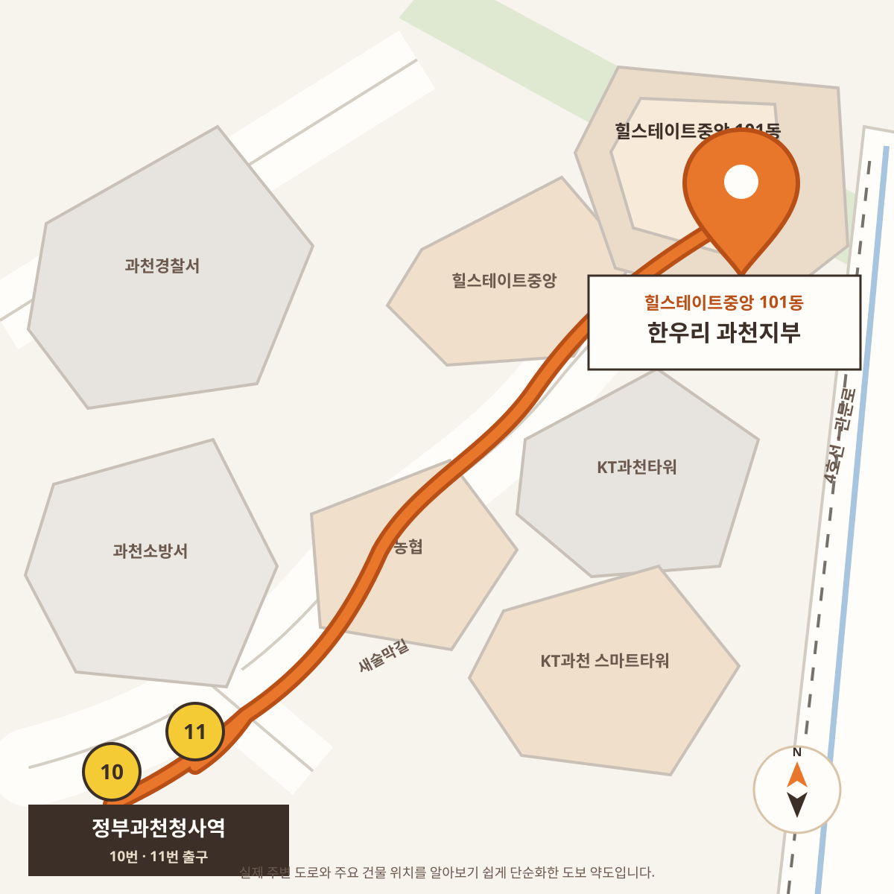

지부 소개
한우리 독서토론논술
과천지부입니다
학생의 학년과 독서 습관을 먼저 듣고,
현재 필요한 읽기·토론·글쓰기 과정을 안내합니다.
수업 가능 지역과 시간은 상담 후 확인할 수 있습니다.
- 주소
- 경기 과천시 관문로 92
힐스테이트중앙 101동 1104호 - 지번·우편번호
- 중앙동 38 · 13807
- 전화 상담
- 02-502-4011

수업 연결 지역
과천 전 지역에서 수업이 가능합니다
전화·방문 시 자세히 안내
방문 / 홈스쿨 / 교습소 상담 연결 가능
- 갈현동수업 연결 가능
- 과천동수업 연결 가능
- 관문동수업 연결 가능
- 막계동수업 연결 가능
- 문원동수업 연결 가능
- 별양동수업 연결 가능
- 부림동수업 연결 가능
- 원문동수업 연결 가능
- 주암동수업 연결 가능
- 중앙동수업 연결 가능
선생님 소개